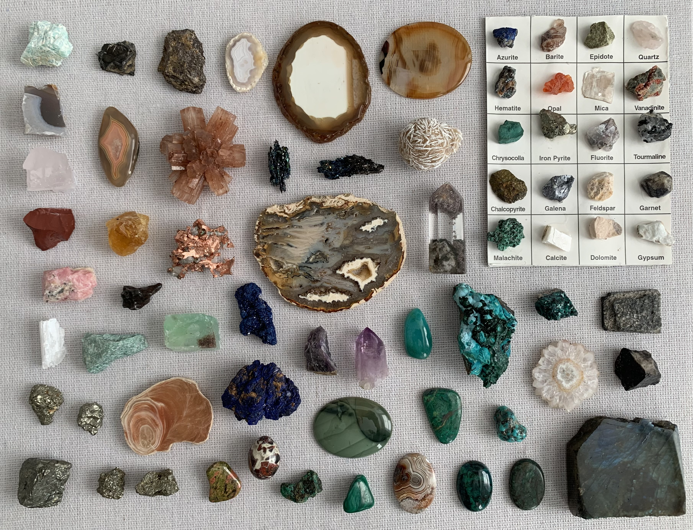

Minerals
A collection of interesting minerals worthy of a showcase. Please hover over the image map to learn more about certain stones.

Fluorite
- Commonly occuring mineral form of Fluorine. CaF2: calcium fluoride
Agate
- A variety of chalcedony (a cryptocrystalline form of silica), which comes in a wide variety of colors. Agates are primarily formed within volcanic and metamorphic rocks. SiO2: silicon dioxide
Agate
- A variety of chalcedony (a cryptocrystalline form of silica), which comes in a wide variety of colors. Agates are primarily formed within volcanic and metamorphic rocks. SiO2: silicon dioxide
Pyrite
- The mineral iron pyrite, also known as fool's gold, is an iron sulfide. Pyrite is the most abundant sulfide mineral. FeS2: iron (II) disulfide
Azurite (Morocco)
- Soft, deep-blue copper mineral produced by weathering of copper ore deposits. Cu3(CO3)2(OH)2: carbonate
Azurite (China)
- Soft, deep-blue copper mineral produced by weathering of copper ore deposits. Cu3(CO3)2(OH)2: carbonate
Stalactite Cross Section
- Mineral formation hanging from the roof of a cave. Likely a speleothem, which form through deposition of calcium carbonate and other minerals in water solutions.
Amethyst
- Amethyst is a purple variety of quartz that owes its violet color to irradiation and impurities of iron. SiO2: silicon dioxide
Amethyst
- Amethyst is a purple variety of quartz that owes its violet color to irradiation and impurities of iron. SiO2: silicon dioxide
Rose Quartz
- Rose quartz is a type of quartz that exhibits a pale pink to rose red hue. The color is usually considered as due to trace amounts of titanium, iron, or manganese in the material. SiO2: silicon dioxide
Jasper
- Jasper, an aggregate of microgranular quartz and/or cryptocrystalline chalcedony and other mineral phases, is an opaque, impure variety of silica, usually red, yellow, brown or green in color; and rarely blue. The common red color is due to iron(III) inclusions. SiO2: silicon dioxide
Amazonite
- Labeled in the pack as Amazonite, see no references for orange amazonite -- if you can identify, please let me know.
Gypsum
- Gypsum is a soft sulfate mineral composed of calcium sulfate dihydrate. Gypsum also crystallizes as translucent crystals of selenite. CaSO4·2H2O
Carborundite
- Carborundite refers to a synthetic compound of silicon carbide that is primarily used as an abrasive material. SiC: silicon carbide
Carborundite
- Carborundite refers to a synthetic compound of silicon carbide that is primarily used as an abrasive material. SiC: silicon carbide
Fuchsite
- Fuchsite, also known as chrome mica, is a chromium-rich variety of the mineral muscovite, belonging to the mica group of phyllosilicate minerals. K(Al,Cr)2(AlSi3O10)(OH)2
Calcite
- Rhombohedral calcite, a very common mineral form of carbonate. CaCO3: calcium carbonate
Mica
- A group of silicate minerals whose outstanding physical characteristic is that individual mica crystals can easily be split into fragile elastic plates. AB2–3(X, Si)4O10(O, F, OH)2
Rhodochrosite (Mexico)
- A manganese carbonate mineral formed by the oxidation of manganese ore. MnCO3: manganese carbonate